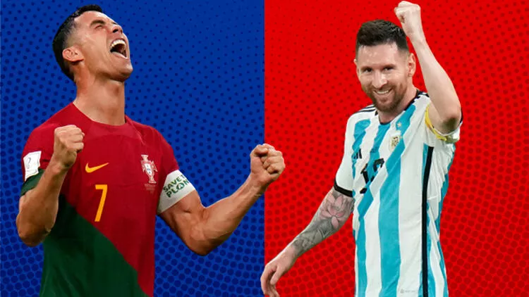

Messi mi Ronaldo mu? | Futbol tarihinin en kişisel rekabeti: Birbirlerini nasıl daha iyi hale getirdiler?
Hepimizin bildiği üzere, Lionel Messi ve Cristiano Ronaldo çağımızın tartışmasız en başarılı sporcuları arasında başı çekiyor. Asıl ilginç olan ise birbirlerinin başarılarındaki payları...
Katar 2022 Dünya Kupası, ilk gününden bu yana çeşitli ilklere sahne oluyor. Bunlardan bir tanesi de 3 Kasım günü oynanan Arjantin-Avustralya maçında yaşandı. 2006'dan bu yana Dünya Kupası turnuvalarında boy gösteren Lionel Messi, ilk defa bir eleme maçında gol attı.
Dünya futbolunun tartışmasız en iyilerinden biri olan Messi'nin, bugüne kadar bu aşamadaki bir müsabakada hiç gol atamamış olması ilginç değil mi? Daha da ilginç olan, en büyük rakibi olan Cristiano Ronaldo'nun da bugüne kadar hiç eleme golü atamamış olması.
Ancak bu ikilinin kariyerlerinin geçmişten bugüne ilerleyişine bakarsak, Ronaldo'nun bu akşam oynanacak İsviçre maçında ağları havalandırmasını izlemek sürpriz olmaz.
"Nasıl yani?" dediğinizi duyar gibiyiz. Şöyle ki bu ikiliden biri ne zaman önemli bir başarı kaydetse, diğeri de hemen peşinden aynı başarıyı hanesine yazıyor. 2000'lerin sonlarında tanınmaya başladıkları günlerden bu yana, Messi ile Ronaldo arasında "Ben senin yaptığın her şeyin daha iyisini yaparım" rekabeti yaşanıyor.
Gelin, The Athletic'in derlediği bilgilerle bu ikilinin 20 yıla
yaklaşan üst düzey kariyerlerine biraz daha yakından bakalım ve
hep "daha iyi" olma noktasında birbirlerinden nasıl ilham
aldıklarını karşılaştırmalı olarak inceleyelim.
Gelin, The Athletic'in derlediği bilgilerle bu ikilinin 20 yıla yaklaşan üst düzey kariyerlerine biraz daha yakından bakalım ve hep "daha iyi" olma noktasında birbirlerinden nasıl ilham aldıklarını karşılaştırmalı olarak inceleyelim.
2007-2008 sezonunda attığı 31 golle Premier Lig'de Manchester United'a şampiyonluğu getiren, Şampiyonlar Ligi'nde kaydettiği 8 golle takımını zirveye taşıyan, milli formayla attığı 4 golle de Portekiz'i 2008 Avrupa Şampiyonası'nda çeyrek finale ulaştıran Ronaldo, o yıl Aralık ayında ilk Ballon d'Or'una layık görüldü. O sezon ilk defa Messi ve Ronaldo sahada karşı karşıya geldi: Sör Alex Ferguson'ın öğrencileri Frank Rijkaard yönetimindeki Barcelona'yı Şampiyonlar Ligi yarı finalinde 1-0'lık skorla eledi.